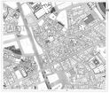
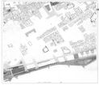

Tavola 13 - Rilievo dei piani terra - Scala 1:500
Tavola 13/00 Rilievo dei piani terra - Scala 1:500
Tavola 13/01 Rilievo dei piani terra - Scala 1:500
Tavola 13/02 Rilievo dei piani terra - Scala 1:500
Tavola 13/03 Rilievo dei piani terra - Scala 1:500
Tavola 13/04 Rilievo dei piani terra - Scala 1:500
Tavola 13/05 Rilievo dei piani terra - Scala 1:500

Tavola 13/06 Rilievo dei piani terra - Scala 1:500
Tavola 13/07 Rilievo dei piani terra - Scala 1:500
Tavola 13/08 Rilievo dei piani terra - Scala 1:500
Tavola 13/09 Rilievo dei piani terra - Scala 1:500
Tavola 13/10 Rilievo dei piani terra - Scala 1:500
Tavola 13/11 Rilievo dei piani terra - Scala 1:500
Tavola 13/12 Rilievo dei piani terra - Scala 1:500
Tavola 13/13 Rilievo dei piani terra - Scala 1:500
Tavola 13/14 Rilievo dei piani terra - Scala 1:500

Tavola 13/15 Rilievo dei piani terra - Scala 1:500
Tavola 13/16 Rilievo dei piani terra - Scala 1:500
Elenco completo di tutti gli elaboarti del Centro Storico Palermo
")